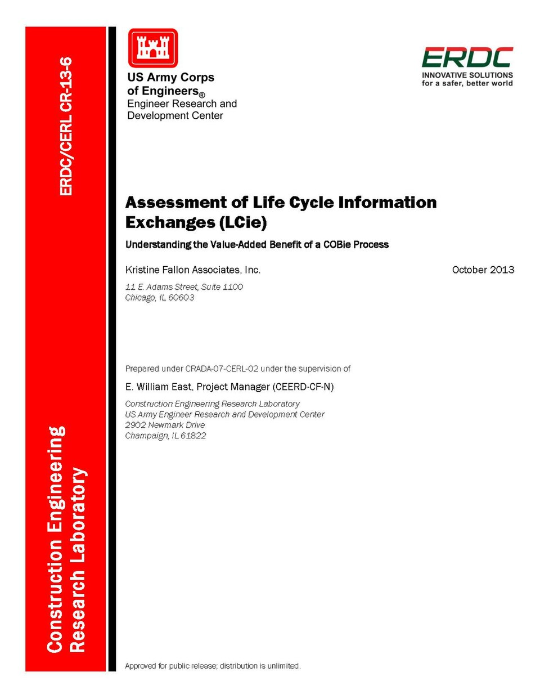

MEDIA LITERACY PROTOCOL
EP 10 // VERIFICATION
STANFORD INQUIRY FRAMEWORK
Before You Share That Claim,
Ask These 3 Questions
1
Where did the claim start?
Don’t trust a repost. Find the original document, filing, or transcript — and check the actual date.
2
What does the evidence actually prove?
A food logo proves dietary rules. An SEC filing proves shares. Neither proves a secret plot.
3
Did it jump to collective blame?
Moving from one individual’s actions to blaming Jewish people as a group is scapegoating, not analysis.
Check Independent Sources
If the facts remain unclear, saying “I don’t know yet” is far better than confidently spreading misinformation.
Be the person who brings
the actual source.
SPECIFIC CLAIMS · REAL EVIDENCE · FACTS OVER MYTHS
ALEX
Before you send that post, give it three questions.
Digital Inquiry Group
EP 10 / 10 · 60.00S MASTER